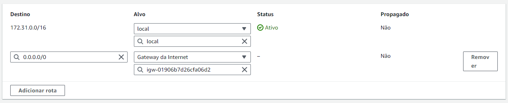
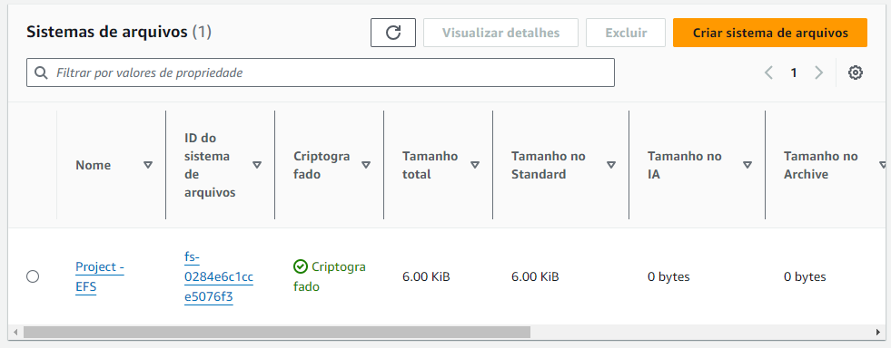
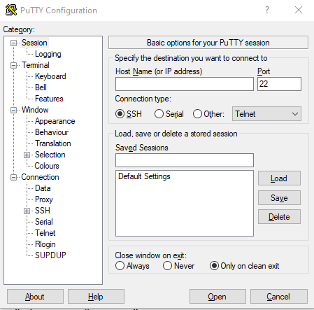
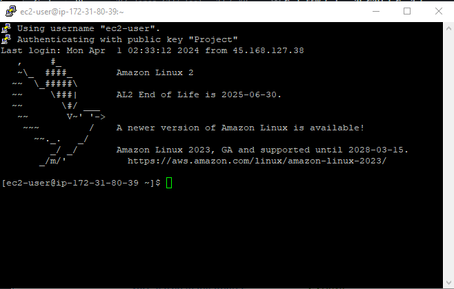
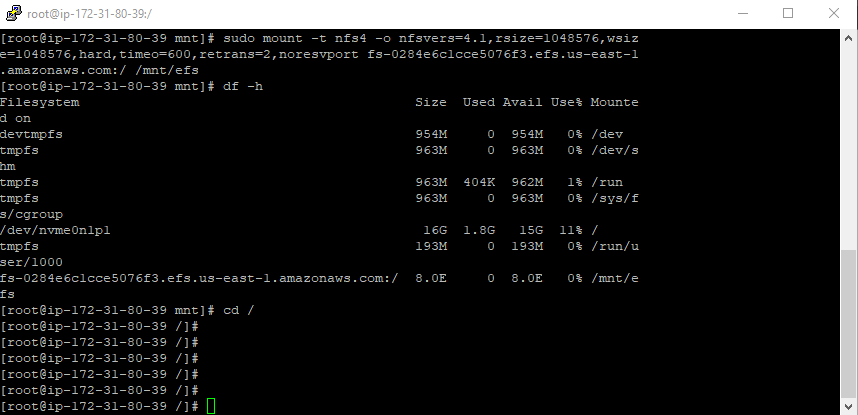
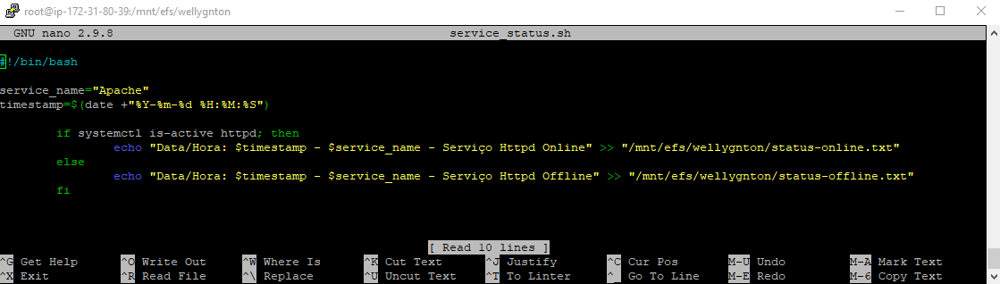
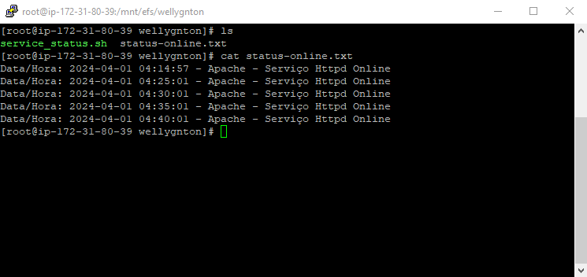
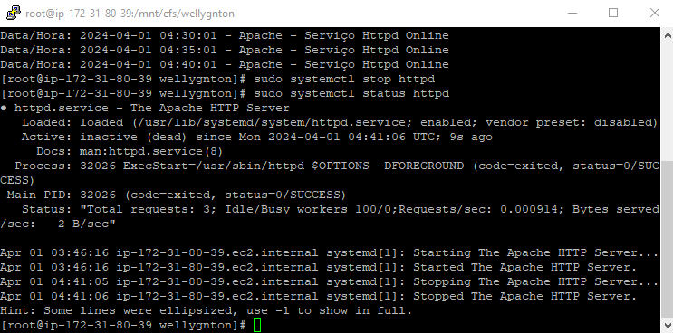
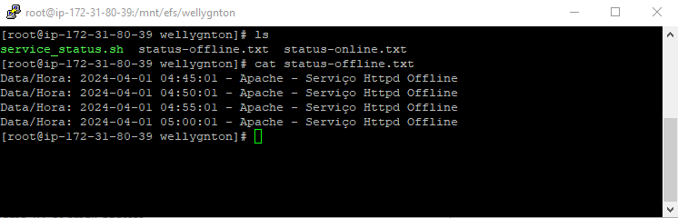
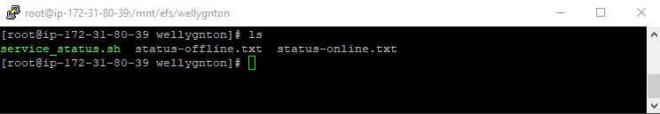

ATIVIDADE LINUX AWS - DOCUMENTAÇÃO
Requisitos AWS ☁️
- Gerar uma chave pública para acesso ao ambiente;
- Criar 1 instância EC2 com o sistema operacional Amazon Linux 2 (FamÃlia t3.small, 16 GB SSD);
- Gerar 1 elastic IP e anexar à instância EC2;
- Liberar as portas de comunicação para acesso público: (22/TCP, 111/TCP e UDP, 2049/TCP/UDP, 80/TCP, 443/TCP).
Requisitos Linux 🐧
- Configurar o NFS entregue;
- Criar um diretorio dentro do filesystem do NFS com seu nome;
- Subir um apache no servidor - o apache deve estar online e rodando;
- Criar um script que valide se o serviço esta online e envie o resultado da validação para o seu diretorio no nfs;
- O script deve conter - Data HORA + nome do serviço + Status + mensagem personalizada de ONLINE ou offline;
- O script deve gerar 2 arquivos de saida: 1 para o serviço online e 1 para o serviço OFFLINE;
- Preparar a execução automatizada do script a cada 5 minutos.
Desenvolvimento da Atividade 📝
AWS – Criação da Chave Pública 🔑
Existem duas maneiras de se criar uma chave pública na AWS, tanto pelo painel EC2 na lateral esquerda na opção “Pares de Chaves” ou durante o processo de criação de uma instância.
- Acesse os serviços de EC2 da AWS;
- No painel lateral esquerdo selecione a opção “Pares de Chaves”;
- Vá até a opção “Criar par de chaves†no canto superior direito;

- Com o painel aberto escolha um nome para o par de chaves;
- Em seguida mantenha o tipo de par de chaves no formato padrão RSA;
- Em “Formato de arquivo de chave privada†selecione a opção .ppk, necessária para o acesso via PuTTY como iremos fazer;
- Ao final, clique em “Criar par de chaves”;
- Salve o arquivo que será gerado em um local seguro;
- Pronto, o par de chaves está criado e será listada em “Pares de Chaves”.
AWS – Criar 1 instância EC2 com o sistema operacional Amazon Linux 2 (FamÃlia t3.small, 16 GB SSD) ☁️
- Vá até “Instâncias†no painel lateral esquerdo;
- Selecione a opção “Executar Instâncias†no canto superior direito;
- Com o painel aberto podemos definir nome e tags para a nossa instância;
- Em seguida escolheremos o Sistema operacional Amazon Linux 2 AMI (HVM);

- O tipo de instância que será t3.small;
- Em “Par de chaves†iremos escolher nossa chave criada anteriormente;
- Nas configurações de rede selecione a opção “criar grupo de segurança†e mantenha marcada a opção “Permitir tráfego SSH de qualquer lugar (0.0.0.0/0);

- Em “Configuração de armazenamento†coloque 16gb SSD de uso geral (gp2);

- Verifique se todas as informações estão corretas e em seguida clique na opção “Executar Instância”.
âš ï¸ Antes de criarmos o Elastic IP, deveremos criar um Gateway de Internet para que seja possÃvel a conexão da rede com a internet.
AWS – Criando Gateway de Internet 🌐
- Na barra de pesquisa do console da AWS, busque pelo serviço de VPC;
- Clique em “Gateways da Internet†no painel esquerdo;
- Vá até a opção “Criar gateway da internet†no canto superior direito;
- Defina um nome para o gateway e clique em “criar gateway da internet”;
- Ainda no painel atual clique em “Ações†e logo em seguida em “Associar à VPC”;
- Escolha a VPC da instância criada anteriormente e clique em “Associar gateway da internet”.
AWS - Gerar 1 elastic IP e anexar à instância EC2 🔗
- No Painel de EC2 clique na opção “IPs Elásticos”;
- Vá até a opção “Alocar endereço IP elástico†no canto superior direito;
- Mantenha todas as opções como padrão e clique em “Alocar”;
- Ainda no painel selecione o IP gerado e clique “Ações”, logo em seguida clique em “Associar endereço IP elástico”;
- Selecione a instância criada anteriormente e o endereço IP privado da mesma e clique em “Associar”;

AWS - Liberar as portas de comunicação para acesso público: (22/TCP, 111/TCP e UDP, 2049/TCP/UDP, 80/TCP, 443/TCP) 🚪.
- No Painel EC2 vá até “Security Groups†na lateral esquerda;
- Selecione o security group criado anteriormente;
- Na parte inferior do painel clique em “Regras de entrada†e logo em seguida em “Editar regras de entrada”;
- Por padrão já temos uma regra de entrada do tipo SSH, protocolo TCP e porta 22;
- Adicionaremos as demais regras mantendo a regra do tipo SSH;
- Clique em “Salvar regras”.

âš ï¸ Para que o nosso acesso via PuTTY a partir de uma máquina Windows seja possÃvel, precisaremos ainda configurar a tabe de rotas.
AWS – Configurando a tabela de rotas 📝
- Acesse o serviço de VPC, em seguida clique na opção “Tabelas de rotas†no painel esquerdo;
- Selecione a tabela de rotas da VPC da instância criada anteriormente;
- Vá até “Ações†e em seguida “Editar rotas”;
- Clique em “Adicionar rota”;
- Em destino escolha 0.0.0.0/0 e em alvo “Gateway da internet”;
- Logo a baixo selecione o gateway criado anteriormente e clique em “Salvar alterações”.

AWS - Criando o serviço de Elastic File System (EFS) 🗃️
- Na barra de pesquisa do console da AWS busque por EFS;
- Dentro do painel vá até “Criar sistema de arquivos”;
- Defina um nome e clique em “Personalizar”;
- No tipo de sistema de arquivos selecione “One Zone”;
- Mantenha o restante das configurações por padrão e clique em “Próximo”;
- Em rede altere apenas o security group, usaremos o security group criado anteriormente;
- Mantenha o restante das configurações como padrão, revise todas as informações e clique em “criar”.

- Ainda no painel, clique no sistema de arquivos criado;
- Ao clicar em “Anexar†no canto superior direito o painel nós mostrará os comando para montagem do sistema de arquivos;
- Utilizaremos a opção de montagem via DNS, copie o segundo comando e salve em um bloco de notas.
✅Finalizamos aqui as configurações do nosso ambiente AWS, em seguida iremos configurar nossa máquina Linux.
Faremos o acesso via PuTTY, para isso o mesma precisará está devidamente instalado na sua máquina Windows. O PuTTY é um cliente SSH gratuito para Windows.
PuTTY – Acessando a instância via PuTTY 💻
- Vá até sua instância EC2, selecione a mesma e clique em “conectar”;
- Abra a aba “Cliente SSH†e copie o DNS público da instância;
- Inicie o PuTTY em sua máquina;
- Em “Category†clique em “Session”;

- Em “Host Name†cole o DNS público de sua instância;
- No tipo de conexão selecione SSH e a porta 22;
- Em seguida clique em “Connection”, depois “SSH”, “Auth†e por fim “credentials”;
- Em “Public-key authentication†na parte de “Private key file for authentication†clique em “Browse”, logo em seguida selecione o arquivo de par de chaves em formato .ppk que foi gerado no momento da criação de par de chaves;
- Ao clicar em “Open†no canto inferior direto, o PuTTY fará a conexão com a nossa instância;
- Se caso for seu primeiro acesso, o PuTTY exibirá uma janela de alerta perguntando se confia no host e se deseja continuar. Clique em “Accept”;
- Em seguida a tela do terminal de nossa instância será aberto.

LINUX – Configurando o NFS entregue 📂
As configurações serão feitas diretamente no terminal Linux da instância EC2 que criamos.
- Entre com o comando
sudo su para ganhar privilégios administrativos;
- Execute o comande de atualização do sistema sudo yum update -y para atualização de pacotes do Linux;
- Com o comando
sudo yum install -y amazon-efs-utils faremos a instalação de pacotes de suporte ao NFS, que permite compartilhar diretórios e arquivos entre sistemas operacionais em uma rede.;
- Com o comando
mkdir /mnt/efs criaremos o diretório /efs dentro do diretório /mnt, que é o diretório de montagem de sistema de arquivos externos do Linux que servirá como nosso ponto de montagem;;
- Para montarmos o sistema de arquivos iremos utilizar o comando copiado anteriormente do console da AWS em sistemas de arquivos
(sudo mount -t nfs4 -o nfsvers=4.1,rsize=1048576,wsize=1048576,hard,timeo=600,retrans=2,(DNS do cliente EFS):/ (caminho local));
- Confirme se o sistema de arquivos EFS está montado corretamente usando o comando
df -h.

LINUX – Configurando o Apache 🛠️
- Execute o comande de atualização do sistema
sudo yum update -y para atualização de pacotes do Linux;
- Use o comando
sudo yum install httpd -y para instalar o Apache;
- Use o comando
sudo systemctl start httpd para iniciar o Apache;
- Para que o Apache seja iniciado automaticamente, execute o comando
sudo systemctl enable httpd;
- Para o Apache iniciar automaticamente, execute o comando
sudo systemctl enable httpd;
- Utilize o comando
sudo systemctl status httpd para verificar se o Apache está em execução;

LINUX – Criando um script que valide se o serviço esta online e envie o resultado da validação para o seu diretorio no nfs 📝
- Execute o comando
nano service_status.sh para criar e abrir o arquivo do script. O script e os arquivos de log deverão está dentro de um diretório com o nome do autor, como sugerido na atividade, então no meu caso o caminho deverá ser mtn/efs/wellygnton;
- Dentro do arquivo, digite o script desejado;

- Utilizando as condicionais If e else, serão criados os dois arquivos de log em formato .txt de acordo com os resultados da verificação. Um arquivo para status de serviço online e outra para offline.
- Salve o arquivo e feche o script;
- Para tornar o arquivo do script executável digite o comando
sudo chmod +x service_status.sh;
- Execute o comando
./service_status.sh para executar o script. O script ira criar o arquivo de log .txt com as informações de validação online;
- Podemos visualizar o arquivo com o comando
cat status-online.txt;

LINUX – Automatização do script para rodar a cada 5 minutos ⏲️
- Digite o comando
EDITOR=nano crontab -e, para que o nano abra o arquivo crontab;
- Dentro do arquivo digite a linha
*/5 * * * * /mnt/efs/wellygnton/service_status.sh;
- Salve o arquivo e feche o editor.
- É possÃvel verificar se a automatização está funcionando abrindo os arquivos .txt que serão criados e guardar as informações de verificação do serviço online e offline.
- Ao abrirmos o arquivos veremos as informações de status de serviço online;

- Para fazermos verificação do serviço offline será necessário interromper o Apache usando o comando
sudo systemctl stop httpd;

- Em seguida podemos verificar que o arquivo .txt de serviço offline será criado;

- Os arquivos estarão disponiveis em nosso diretório de destino.

Referencias 📝
Documentação AWS: https://docs.aws.amazon.com/pt_br/
Guia de Comandos Básicos do Linux: https://medium.com/@raphaelguimares/guia-de-comandos-b%C3%A1sicos-do-linux-dbbf1b80e1f1
👍 Atividade densenvolvida e documentanda por Wellygnton Chaves de Matos, propostar pelo Programa de Bolsas Compass UOL AWS e DevSecOps/2024. 👍
âš ï¸Ao decorrer da documentação algumas informações ficaram explicitar, como endereços IP e id da máquina virtual, o que não é recomendado. Refoço que tais informações não estão mais disponiveis, a intância criada fora apenas para fins de laboratório e logo em seguida encerrada.âš ï¸